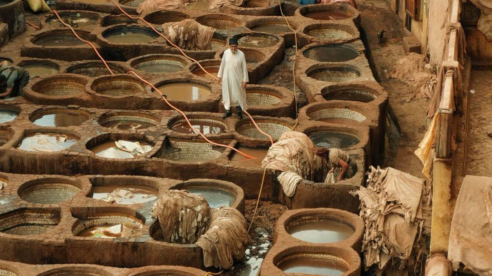
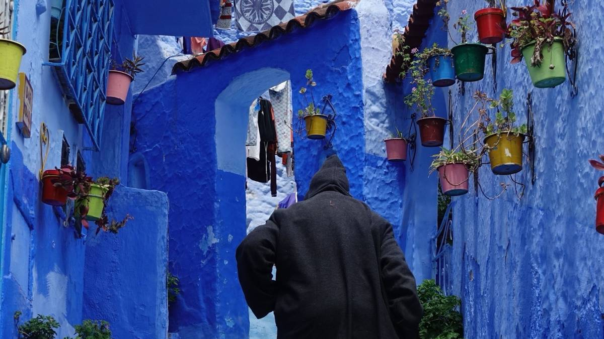
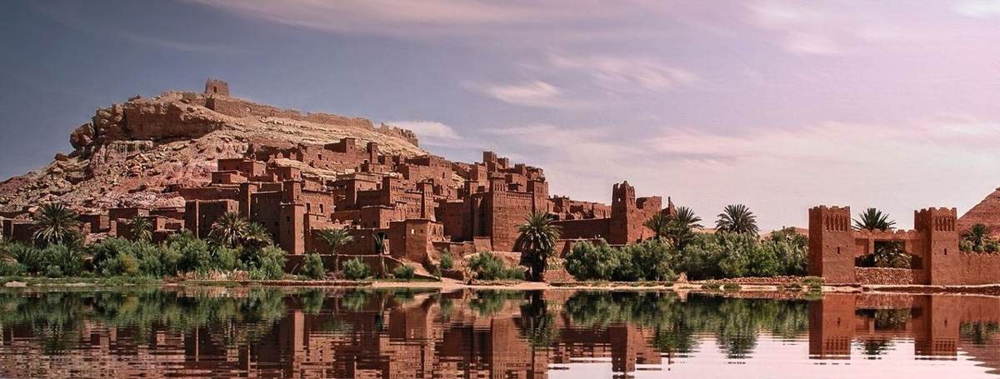

Home / Special Tours / Photography Tour
A private 7-day journey from Fes to Marrakech by the Sahara, planned around the light.
A private journey for travellers who see Morocco through a lens. The route is the classic one from Fes to Marrakech by the Sahara, but the rhythm is not: your driver stops whenever the light is right, and each day is planned so that you are in the best places at the best hours.
It begins in the medina of Fes with a local guide, among its gates, madrasas, souks and the colours of the Chouara tannery, then heads north to Chefchaouen to photograph the blue lanes in the soft light of evening and early morning. On the way back, the Roman ruins of Volubilis and the great gate of Meknes.
Across the cedar forests of the Middle Atlas and the palm groves of the Ziz Valley, you reach the Sahara for two nights around Erg Chebbi: portraits and music in Khamlia, nomad life, a camel trek at golden hour and the sunrise over the dunes from your camp.
The last two days follow the canyons of the Todra and the Dades, the Rose Valley, the palm groves of Skoura and the earthen ksar of Ait Ben Haddou, before the high viewpoints of the Tizi n’Tichka and the arrival in Marrakech.
FES · CHEFCHAOUEN · VOLUBILIS · MEKNES · IFRANE · MIDELT · MERZOUGA · RISSANI · TODRA · DADES · AIT BEN HADDOU · MARRAKECH
After breakfast, a full day in Fes el-Bali with a local guide: the Blue Gate of Bab Boujloud, the lanes and fountains of the medina, the carved cedar and zellige of a madrasa, the souks of the coppersmiths and dyers, and the terraces above the Chouara tannery, best in the morning light. Lunch in the medina, then the panoramic viewpoints over the old city in the late afternoon. Dinner and night in Fes.
North through rolling hills and olive groves into the Rif Mountains, with stops along the way. Arrival in Chefchaouen in the afternoon, in time to explore the blue medina, its doors, stairways and the Outa el Hammam square as the light softens, and to walk up to the Spanish mosque for sunset over the town. Dinner and night in a hotel or riad.
Early morning in the empty blue lanes, the best moment for street photography in Chefchaouen. Then south to Volubilis, the Roman city with its triumphal arch, columns and floor mosaics set in open countryside, and Meknes with the monumental gate of Bab Mansour. Back to Fes in the late afternoon. Dinner and night in a hotel or riad.
Into the Middle Atlas through Ifrane and the cedar forest near Azrou, where the group can often see the Barbary macaques, a good moment to talk about the ecosystem of the mountains. Through Midelt and down the Ziz Valley, with stops and short explanations about the oases and their irrigation. Arrival in Merzouga in the evening. Dinner and night in a hotel at the foot of the dunes.
A relaxed day around the dunes: portraits and Gnawa music in Khamlia, the black stone plains of the hamada, a visit to a nomad family, palm villages and viewpoints over the sand. In the late afternoon, a camel trek into the dunes at golden hour, with time on the crests for the sunset and the long shadows of the caravan. Dinner at the camp and, on clear nights, a sky full of stars for night photography.
Up before dawn for the sunrise over the dunes, the softest light of the trip, then breakfast at the camp. Through Rissani and Erfoud and west to the Todra Gorge, where the morning sun lights the top of the walls. On through Tinghir and its palm grove, then the Dades Valley with its kasbahs and rock formations, and the famous hairpin road above the gorge if time allows. Dinner and night in a hotel or riad.
Through the Rose Valley and the palm groves and kasbahs of Skoura to Ouarzazate, then the ksar of Ait Ben Haddou, a UNESCO site and one of the most photographed places in Morocco, best seen from the riverbank and from the old granary at the top. Over the High Atlas by the Tizi n’Tichka pass, with stops at the viewpoints, and arrival in Marrakech in the late afternoon or evening.




Every trip is private, so the price depends on your dates, the number of travellers and the accommodation you choose. Send us your dates and we reply with a programme and a clear price.
No. It is for anyone who loves photography, with a camera or a phone.
This program is 7 days from Fes to Marrakech. It is private, so we can add days, start in Marrakech or change the route around what you want to photograph.
Autumn and spring give soft light and clear skies. Winter is great for snow on the Atlas.
Tell us what you want to shoot, and we will build the route around it.